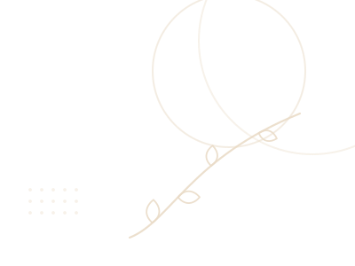
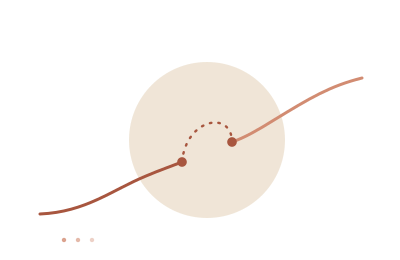

Menos peleas,
no más paciencia
Ya sabes qué mamá quieres ser. Cuatro herramientas para dejarla salir en los días difíciles.
ComprenderConectarTransformar

Ya sabes qué mamá quieres ser. Cuatro herramientas para dejarla salir en los días difíciles.
ComprenderConectarTransformar
Menos peleas, no más paciencia

Capítulo cuatro
Herramienta 3Vas a volver a gritar. La pregunta útil no es cómo no volver a gritar nunca. Es qué se hace en los veinte minutos siguientes.
Primero, el momento. No lo hagas de inmediato, porque ninguno de los dos está todavía en condiciones. Pero tampoco lo dejes para el otro día.
«Hace un rato te grité. Eso no estuvo bien.»
Fíjate en lo que no está: no está «te grité porque tú no me hiciste caso». Eso no es una disculpa, es una acusación con introducción amable. Y el niño lo entiende perfecto.
«Te asustaste.»
«Te dio rabia y te pusiste triste.»
No le preguntes cómo se sintió. Nómbralo tú, aunque le atines a medias.
ComprenderConectarTransformar
redvinculo.com
Este material brinda información general y no reemplaza el acompañamiento profesional.
© Red Vínculo. Todos los derechos reservados.